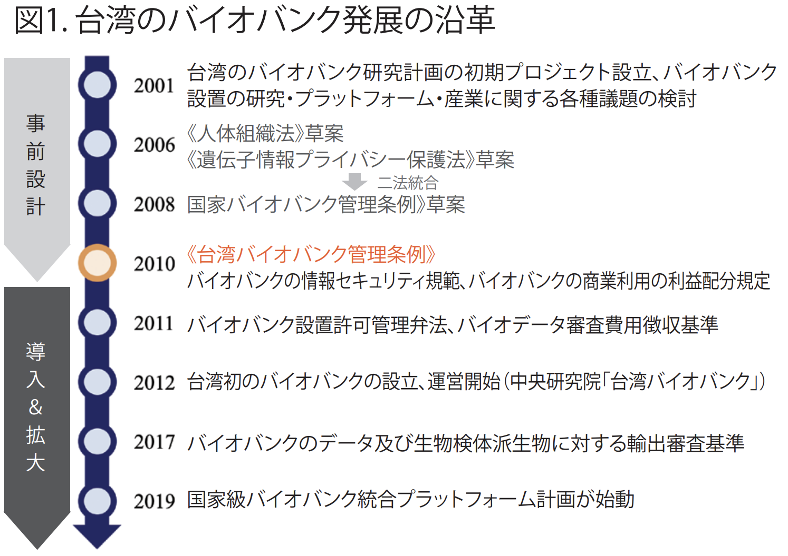
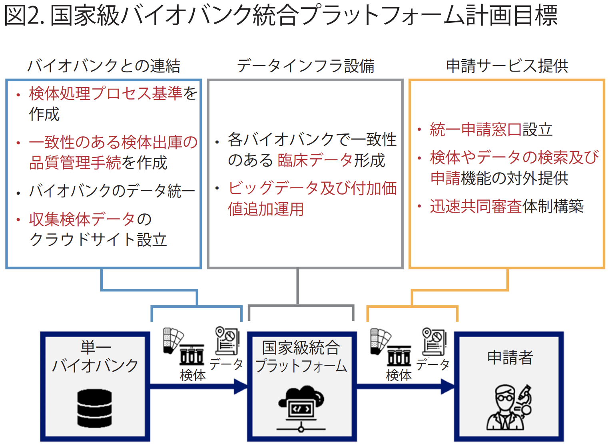
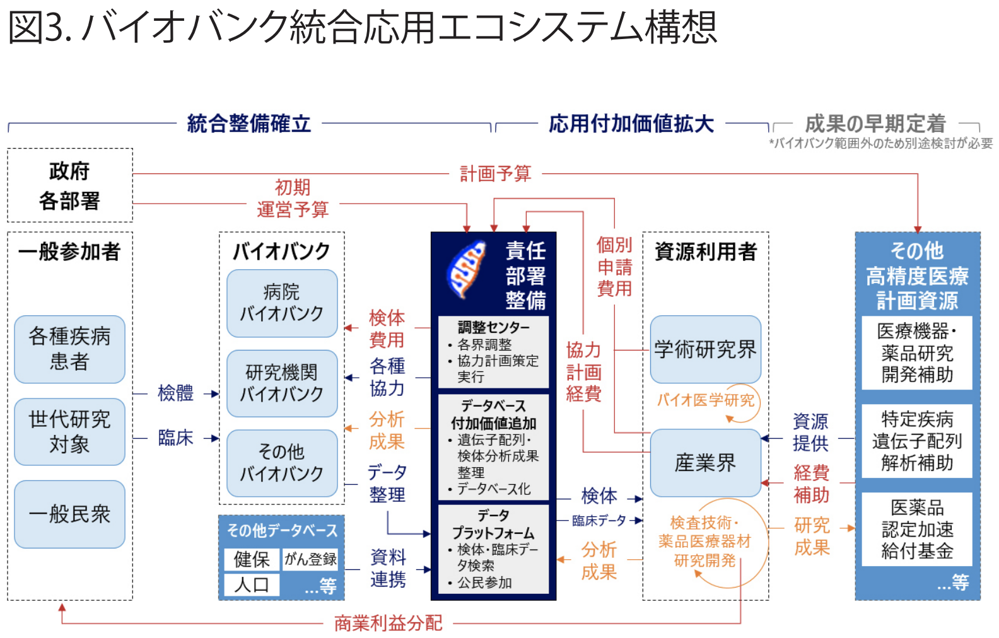

バイオバンクは国民の生物検体及び臨床データのプラットフォームを保存し、貴重なバイオ医療研究資源を各界で使用する ために提供するものである。近年のバイオバンク運用拡大の動きに対し、台湾は既存資源の統合を積極的に進めており、統合 プラットフォーム方式のサービスを単一窓口に集中させて提供している。将来、法律手続きの調整や責任帰属モデル成立が進 めば、台湾のバイオバンクは資源の提供・連結・フィードバック・処理・拡大を行う一大エコシステムとなり、完成度の高い 人体健康データとして次世代高精度医療発展を支援するものとなるだろう。
バイオバンクは、人類の生物検体（血液・組織・その他体液
等）ないし参加者の関連データ（病例・行動・環境等）を大量保
存し、将来の研究用途で使用するためのデータベースとするも
のである。
台湾のバイオバンクに関する検討は21世紀初頭に開始され
た。過去の初期研究計画から法律にわたって検討が行われた
後、2010年2月に「バイオバンク管理条例」が採択され、過去に
実施され厳格管理されている検体収集保管および使用行為を
規定し、バイオバンクの設置許可・操作手順・参加者の理解と同
意・検体の保管や運用提供など、設置・管理と応用に関する手
続きを明文化した。そのほか、設立・情報セキュリティ・費用・利
益配分・検体輸出等の行政規則はさらに数年後制定され、法規
環境が全体的に整備された。
上記法案に支えられ、台湾の政府・民間の各種機構のバイオ
バンクが次々と設立されており、現在合計33のバイオバンクが存
在する。その内訳は主に大学の医学センターや病院が設立した
ものであり、そのほか研究機構設置によるものが２つ、地方政府
によるものが１つと、民間機構によるものが１つである。検体資
源は450万サンプル以上あり、延べ46万人分以上によるものと
なっており、大きな成果を上げている。

台湾のバイオバンク発展に伴い、将来に向け応用需要が拡大
すると同時に、申請利用上の問題も出てきた。例えば、個別デー
タ管理や分散した運営管理のため個別申請や何度も繰り返し
申請作業が必要となるほか、品質管理基準がまちまちで比較対
照が困難、といった問題があった。
上記の問題に対し、台湾の行政院生技術産業策略諮議委員
会(Bio-Taiwan Committee)は産業発展加速の重要性に鑑
み、医療データとバイオバンクの統合を提案し、将来の医療分野
産学研の重要インフラとすべくバイオバンク統合プラットフォー
ム協力アライアンスの設立を決定した。バイオバンクを促進する
ことで、第一線の研究開発と応用とを結びつけ産業発展をもた
らす狙いがある。
台湾の既存バイオバンク資源を統合し有効活用するべく、「国
家級バイオバンク統合プラットフォーム設置計画」が2019年5月
に立ち上げられ、衛生福利部が主導かつ予算を管轄し、国家衛
生研究院が執行機関となり、国家級の統合プラットフォームとそ
の管理事務局を設置し、全国のバイオバンク統合をはかっている。

具体的には、国家級バイオバンク統合プラットフォームは臨床
データと生物検体に対して一致性のある品質管理プロセスを設
定し、台湾各地に分散されたバイオバンク資源をとりまとめる。さ
らに、検体の統合データ一覧を統一窓口で申請受理し、共同審
査体制により迅速手続が可能になる。
統合の結果、2020年中頃までに国内25のバイオバンク資源
をコンテンツ管理システムとポータルサイト提供により結合し、
15万件以上データを取りまとめ、外部からの検索登録が可能に
なった。さらに、統一申請窓口へ67件の外部からの申請を受理
した。統合プラットフォームは、引き続き検体の品質基準と医療
データの一致性を推進し、絶えず内容の充実をはかっている。
バイオバンクは生物医学研究インフラとして学術研究目的で
の利用に偏重していたが、近年は新たな検査方法や治療方法
の開発など産業発展貢献のために利用する動きがあり、より一
層の有効活用が期待されている。
台湾政府は積極的に既存資源の統合整理とプラットフォーム
統合による単一窓口方式で提供者と利用者との結びつきを進め
るほか、産業利用に関する課題の全面的な検討も行っている。ビ
ジネス運用の利益配分方法等既存法規の調整による企業利用
の負担軽減、検体を収集から保存までのプロセスにより分類さ
れることからの信頼性向上、集中審査制度による申請結果待ち
期間の短縮、バイオバンクとその他の各種統計データベースとの
連結による多様なクロスチェックなど、中短期発展の重点事項に
関する議論が行われている。
一方で、優れた成果を出し続けるには継続的な推進活動が
欠かせない。バイオバンクの永続的な運営と拡大は大きな課題
であり、専門チームによる検討と永続的ビジネスモデルの計画が
必要である。今後、既存の一般使用申請形態のほか、専門チー
ムによる産官学研共同研究分析計画を継続的に実施すること
で、各界がより緊密に協力しあうことが期待される。バイオバンク
資源をより有効活用することで、成果向上、収益増加といった多
方面での効果が得られる。

将来的に上述のバイオバンク資源計画・設置・調整が整備さ
れた後は、バイオバンクは応用エコシステムとして各界の資源同
士を繋ぎ、優れたバイオ医療研究の検体データを提供すると同
時に、バイオ医療に関連する産学研究開発の促進を支援し、同
時に成果配分制度のサイクルでさらなる成長を促すことが可能
になる。その他にも遺伝子配列解析補助・医薬品認定加速補助
等、バイオバンクと同時展開が可能な各種高精度医療推進計
画と組み合わせて、高精度医療製品や関連サービスの定着が
加速されるだろう。